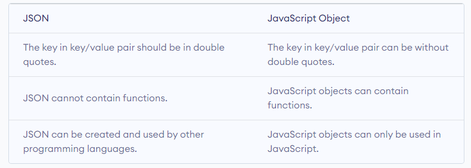

Data can be stored and sent using the JSON format.
When sending data from a server to a web page, JSON is frequently used.
For example:
{
"name": "Gökhan Ertaş",
"birthYear": 1988,
"maritalStatus": "married"
"gender": "male",
}
Data in JSON are organized as key/value pairs and are separated by a comma ,.
JavaScript served as the basis for JSON. Thus, the syntax of JSON is similar to that of object literal in JavaScript. But other computer languages can also access and produce the JSON format.
JSON data is made up of key/value pairs that resemble the characteristics of JavaScript object properties. A colon : separates the double quotations used to write the values and the key.
For example:
"name": "Gökhan Ertaş"
Within the curly brackets { }, the JSON object is written. Multiple key/value pairs can be found in JSON objects.
For example:
{ "name": "Gökhan Ertaş", "birthYear": 1988 }
Square brackets [ ] are used to write JSON arrays.
For example:
["Driven by Impact", "Best Environment for Best People", "Future in Mind", "Define Next"]
[
{"name": "Gökhan Ertaş", "maritalStatus": "married"},
{"name": "İlkay İvrendi", "maritalStatus": "single"},
{"name": "Ozan Avcular", "maritalStatus": "married"},
{"name": "Ediz Agarer", "maritalStatus": "single"}
]
Data in JSON can include arrays and objects. But functions cannot be values in JSON data, unlike in JavaScript objects.
You can use the dot . notation to access JSON data.
For example:
const data = {
"name": "Gökhan Ertaş",
"birthYear": 1988,
"maritalStatus": "married",
"company": {
"name" : "Team DefineX",
"numberOfEmployee" : 350,
"coreValues" : ["Driven by Impact", "Best Environment for Best People", "Future in Mind", "Define Next"]
},
"skills" : ["JavaScript", "HTML", "CSS", "Java", "C#", "Pega BPM", ".Net MVC", "Team Management", "Web Methods ArGE"]
}
console.log(data.name); // Gökhan Ertaş
console.log(data.company); // { name: "Team DefineX", numberOfEmployee: 350, coreValues: Array(4) ["Driven by Impact", "Best Environment for Best People", "Future in Mind", "Define Next"] }
console.log(data.company.name); // Team DefineX
console.log(data.skills[1]); // HTML
JSON data is accessed using the . notation. variableName.key is how it is written.
const person = {
"name": "Gökhan Ertaş",
"birthYear": 1988
}
console.log(person["name"]); // Gökhan Ertaş
Even though JSON and JavaScript objects have similar syntax, JSON is not the same as JavaScript objects.

The built-in JSON.parse() function can be used to transform JSON data into a JavaScript object.
For example:
const data = '{ "name": "Gökhan Ertaş", "birthYear": 1988 }';
// converting to JavaScript object
const obj = JSON.parse(data);
console.log(obj.name); // Gökhan Ertaş
The built-in JSON.stringify() function in JavaScript allows you to convert JavaScript objects to JSON format as well.
For example:
const data = { "name": "Gökhan Ertaş", "birthYear": 1988 };
// converting to JSON
const obj = JSON.stringify(data);
console.log(obj); // "{"name":"Gökhan Ertaş","age":1988}"